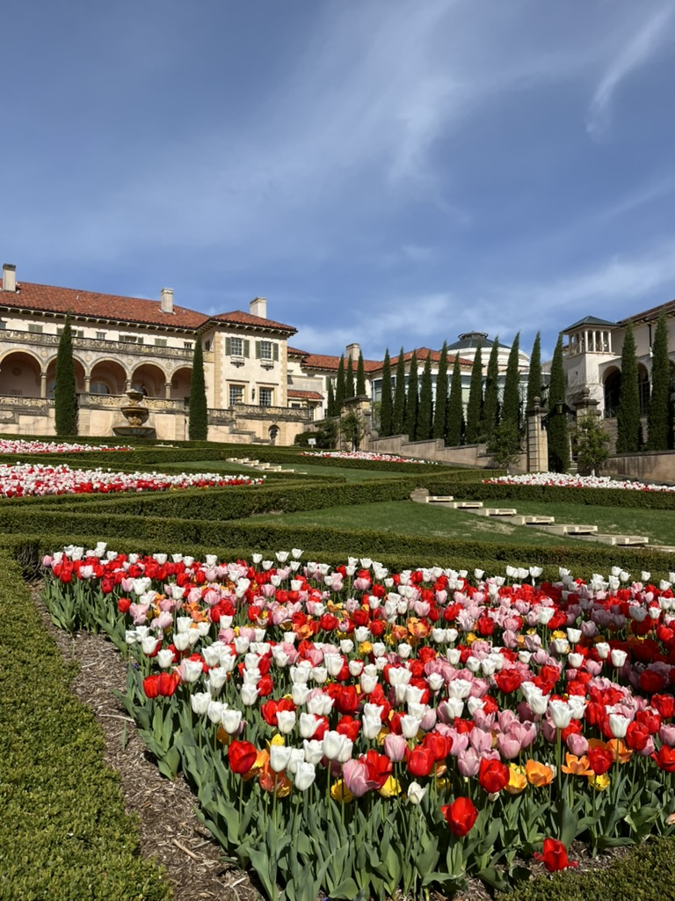
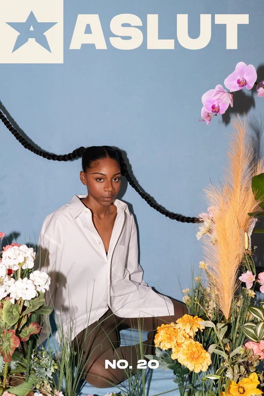

Discover hidden gems or the rightfully saturated spots to visit in Tulsa.
Frank Loyd Wright House here in Tulsa
For thrifting I find the most at Family and Children Services Thrift Store, H.O.W., and Mama's Boutique. Mama's Boutique is something I want to gatekeep but the guy who owns it is so sweet and deserves every bit of business. Vintage is a different story. If you don't mind paying an extra dime for curation, Tulsa Vintage Co is great as well as their neighbor, Polly Hester. Harrison Rose too. A little bit smaller but still great is The Sobo and my friend Meghan runs and markets very well for MeggysVintageGoods. She often does popups or meet ups so check her out on instagram!
There is a cat at a marketing firm GuRuStu in the East Village area that loves to people watch out of the front window. Supposedly if you slip a dollar through the door slot he will snatch it up! Don't worry, all the bill collecting goes to the Tulsa Day Center for the Homeless. Thank god for Cashnip's cuteness and money appetite!
The Tulsa band scene is also worth checking out. My favorites are the Manta Rays, King Cabbage Brass Band, CLIFFDIVER, and Broncho (duh). I also have some friends who started a band less than a year ago that you should invest in before they start thriving too hard: Jam On Toast.
For the amount of times I have seen the Manta Rays, it has come to my attention that I have never really returned with a quality video. Hopefully this is not a disservice. You will just have to see for yourself! They play at the colony every Sunday at 6pm, go check support!
Also worth note is the Tulsa Punk Rock Flea Market, Time Travelers Vintage Expo, First Friday Downtown, The Farmers Market, Tulsa Really Really Free Market, Tulsa Tough, Oktoberfest, Philbrook tulip season, Circle Cinema, Mayfest, Wednesday Trivia Night at the Pump, and Food Truck Wednesday's at Guthrie Green. 
 Extra: ThePickup (formally the root) is a great forum for discovering Tulsa and finding events happening each weekend. You can follow them on social media but I think a subscription to their website would be far worth it. ASLUT magazine is also making amazing strides for the Tulsa art scene. They host events, make commentary, and push boundaries. Its truly all things art and pop culutre. Check them out as well.